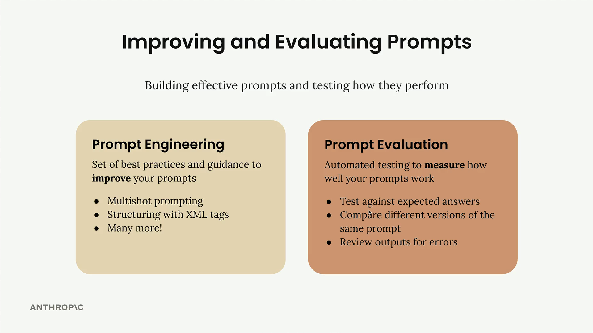
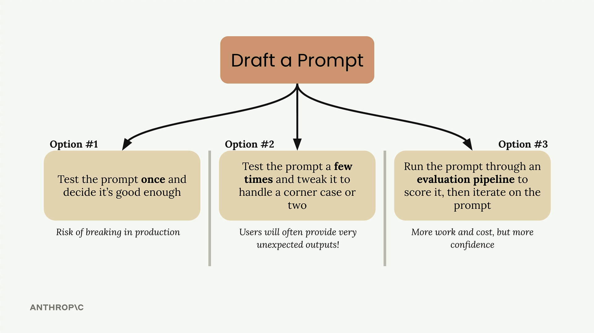

Оценка промптов
Чему научитесь
Видео 1:48 и текст урока
К концу урока вы сможете:
- отличить prompt engineering от prompt evaluation;
- назвать три пути после написания промпта и их риски;
- объяснить, зачем прогонять промпт через конвейер оценки.
Видео и текст урока.
Смотреть урок на Skilljar Prompt evaluation · 1:48Когда вы работаете с Claude, хороший промпт — это только начало. Чтобы строить надёжные ИИ-приложения, нужно понимать два ключевых понятия: prompt engineering и prompt evaluation. Prompt engineering даёт приёмы, как писать промпты лучше, а prompt evaluation помогает измерить, насколько хорошо эти промпты на самом деле работают.

Prompt engineering и prompt evaluation
Prompt engineering — ваш набор инструментов для составления эффективных промптов. В него входят приёмы вроде:
- multishot prompting (несколько примеров в промпте);
- структурирование XML-тегами;
- множество других рекомендаций.
Эти приёмы помогают Claude точно понять, о чём вы просите и каким должен быть ответ.
Prompt evaluation устроена иначе. Речь не о том, как писать промпты, а о том, как измерять их эффективность с помощью автоматического тестирования. Можно:
- проверять ответы на соответствие ожидаемым;
- сравнивать разные версии одного и того же промпта;
- просматривать результаты в поисках ошибок.
Три пути после написания промпта
Когда черновик промпта готов, обычно есть три варианта, что делать дальше:

Вариант 1: один раз проверить промпт и решить, что этого достаточно. Велик риск, что в продакшене он сломается, когда пользователи пришлют неожиданный ввод.
Вариант 2: проверить промпт несколько раз и подправить его под пару пограничных случаев. Это лучше первого варианта, но пользователи часто присылают совсем неожиданные вещи, о которых вы не подумали.
Вариант 3: прогнать промпт через конвейер оценки (evaluation pipeline), получить балл и дорабатывать промпт, опираясь на объективные метрики. Это требует больше работы и затрат, но даёт гораздо больше уверенности в надёжности промпта.
Почему инженеры попадают в ловушки тестирования
Варианты 1 и 2 — типичные ловушки, в которые попадают все инженеры, включая автора курса. Естественно написать промпт для серьёзного приложения и протестировать его недостаточно. Мы склонны недооценивать, сколько пограничных случаев встретят реальные пользователи.
В действительности после выкладки промпта в продакшен пользователи будут взаимодействовать с ним так, как вы и не предполагали. Промпт, казавшийся надёжным на ваших немногих тестах, может быстро сломаться на всём разнообразии реального ввода.
Подход «сначала оценка»
Вариант 3 — более системный подход к разработке промптов. Прогоняя промпт через конвейер оценки, вы получаете объективные метрики его качества на более широком наборе тестовых случаев. Такой подход, основанный на данных, позволяет:
- находить слабые места до того, как они станут проблемами в продакшене;
- объективно сравнивать версии промпта;
- уверенно дорабатывать промпт по измеримым улучшениям;
- строить более надёжные ИИ-приложения.
Такой подход требует больше вложений времени и тестовой инфраструктуры на старте, но окупается надёжностью и устойчивостью итогового приложения. Цель — ловить проблемы во время разработки, а не после того, как на них наткнутся пользователи.
Дальше
Следующий урок разбирает типичный процесс оценки по шагам — от черновика промпта до сравнения баллов.
Оригинал урока: Prompt evaluation.